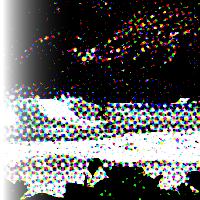

Newsprint
Digital halftoning with optional modulations.
Color Model
How many inks to use just black, rg, rgb (additive), or cmyk
name: color-model
type: enum
Pattern
Halftoning\/dot pattern to use
name: pattern
type: enum
Period
The number of pixels across one repetition of a base pattern at base resolution.
name: period
type: double
default: 12.00
minimum: 0.00
maximum: 200.00
ui-minimum: 0.00
ui-maximum: 200.00
ui-gamma: 1.00
ui-step-small: 1.00
ui-step-big: 10.00
ui-digits: 2
Turbulence
Color saturation dependent compression of period
name: turbulence
type: double
default: 0.00
minimum: 0.00
maximum: 1.00
ui-minimum: 0.00
ui-maximum: 1.00
ui-gamma: 1.00
ui-step-small: 0.00
ui-step-big: 0.10
ui-digits: 3
Blocksize
Number of periods per tile, this tiling avoids high frequency anomaly that angle boost causes
name: blocksize
type: double
default: -1.00
minimum: -1.00
maximum: 64.00
ui-minimum: -1.00
ui-maximum: 64.00
ui-gamma: 1.00
ui-step-small: 1.00
ui-step-big: 10.00
ui-digits: 2
Angle Boost
Multiplication factor for desired rotation of the local space for texture, the way this is computed makes it weak for desaturated colors and possibly stronger where there is color.
name: angleboost
type: double
default: 0.00
minimum: 0.00
maximum: 4.00
ui-minimum: 0.00
ui-maximum: 4.00
ui-gamma: 1.00
ui-step-small: 0.00
ui-step-big: 0.10
ui-digits: 3
Black and green angle
angle offset for patterns
name: twist
type: double
default: 75.00
minimum: -180.00
maximum: 180.00
ui-minimum: -180.00
ui-maximum: 180.00
ui-gamma: 1.00
ui-step-small: 1.00
ui-step-big: 15.00
ui-digits: 2
label:[color-model {white-on-black, black-on-white} : bw-label, color-model {rgb} : rgb-label, color-model {cmyk} : cmyk-label]
unit:degree
cmyk-label:Black angle
rgb-label:Green angle
bw-label:Angle
Red and cyan angle
name: twist2
type: double
default: 15.00
minimum: -180.00
maximum: 180.00
ui-minimum: -180.00
ui-maximum: 180.00
ui-gamma: 1.00
ui-step-small: 1.00
ui-step-big: 15.00
ui-digits: 2
visible:color-model {rgb, cmyk}
label:[color-model {rgb} : rgb-label, color-model {cmyk} : cmyk-label]
unit:degree
cmyk-label:Cyan angle
rgb-label:Red angle
Blue and magenta angle
name: twist3
type: double
default: 45.00
minimum: -180.00
maximum: 180.00
ui-minimum: -180.00
ui-maximum: 180.00
ui-gamma: 1.00
ui-step-small: 1.00
ui-step-big: 15.00
ui-digits: 2
visible:color-model {rgb, cmyk}
label:[color-model {rgb} : rgb-label, color-model {cmyk} : cmyk-label]
unit:degree
cmyk-label:Magenta angle
rgb-label:Blue angle
Yellow angle
name: twist4
type: double
default: 0.00
minimum: -180.00
maximum: 180.00
ui-minimum: -180.00
ui-maximum: 180.00
ui-gamma: 1.00
ui-step-small: 1.00
ui-step-big: 15.00
ui-digits: 2
visible:color-model {cmyk}
unit:degree
pads: input output
parent-class: GeglOperationPointFilter
categories: render
source: operations/common/newsprint.c
reference-chain: load path=images\/standard-input.png newsprint period=6.0 pattern=pssquare color-model=cmyk
position-dependent: true
 This page is part of the online GEGL Documentation, GEGL is a data flow based image processing library/framework, made to fuel GIMPs high-bit depth non-destructive editing future.
This page is part of the online GEGL Documentation, GEGL is a data flow based image processing library/framework, made to fuel GIMPs high-bit depth non-destructive editing future.